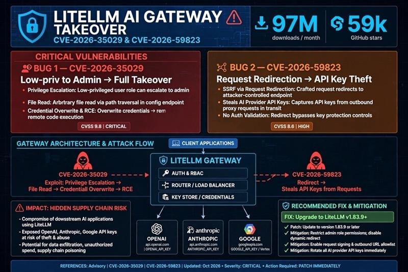

LiteLLM Security: Trivy, Supply-Chain Compromise and AI Gateway RCE
An AI gateway concentrates access to models, credentials, budgets, and business data. When that gateway, or the pipeline that ships it, is compromised, the blast radius reaches far beyond a single chatbot.
LiteLLM sits at an increasingly important junction in AI systems: the place where applications exchange their own access tokens for the ability to call upstream model providers. Its usefulness is also why security failures matter. A dependency running in a build job, an overly powerful configuration endpoint, and a caller-controlled outbound destination can each break a different trust boundary.
This article separates three stories that are easy to conflate: the March 2026 malicious PyPI releases linked by LiteLLM to the Trivy compromise, an authenticated configuration-to-code-execution vulnerability, and an authenticated server-side request forgery vulnerability. They are related security lessons, not one demonstrated exploit chain. The product shown in the supplied graphic is LiteLLM, not llvmlite, the separate LLVM binding used in Python tooling.
The short version
- Supply chain: LiteLLM PyPI versions
1.82.7and1.82.8were malicious releases, not merely versions containing an ordinary software bug. - Gateway RCE: CVE-2026-35029 allowed an authenticated user to abuse a missing administrative authorization check. The vendor identifies
1.83.0as the fix. - Gateway SSRF: CVE-2026-59823 allowed a valid virtual-key holder to influence outbound routing through nested request configuration. The vendor identifies
1.83.9as the fix. - Recovery: patching prevents known entry paths; it does not revoke stolen credentials, remove attacker persistence, or establish that old artifacts were trustworthy.
1. What is LiteLLM?
LiteLLM is an open-source Python SDK and an AI gateway, also called the LiteLLM Proxy. The SDK exposes a common interface across model providers; the gateway offers a service that applications can call using OpenAI-compatible or provider-native request formats. These are distinct deployment modes. Finding the Python package in a notebook does not prove that a network-accessible proxy is running.
In a gateway deployment, teams can centralize provider routing, fallbacks, retries, virtual keys, access policies, usage accounting, and an administrative UI. An application uses a gateway-issued virtual key rather than necessarily holding the real OpenAI, Anthropic, or cloud-provider credential. The gateway maps the request to an approved model and authenticates upstream on the application's behalf.
That distinction creates several security boundaries: the application-to-gateway identity, the caller's model and tenant permissions, the administrative configuration plane, and the gateway's authority to reach providers and retrieve secrets. A virtual key should authorize a bounded inference request. It should not implicitly authorize arbitrary configuration changes or the selection of an arbitrary server-side network destination.
2. Reading the supplied graphic critically
The reference image captures the central concern well: an AI gateway can concentrate credentials and downstream dependency risk. However, its severity labels, prerequisites, and combined mitigation need qualification. The comparison below uses the vendor advisories and the CVE Program's CNA records, checked on 15 October 2026. Popularity figures in the image are not used as verified measurements or estimates of affected systems.


| Issue | Prerequisite and boundary | Published CNA rating | Vendor fix |
|---|---|---|---|
| CVE-2026-35029 | Already-authenticated user; missing admin authorization on configuration updates. RCE, server-file disclosure, and privileged-account takeover are documented impacts. | CVSS v4.0 8.7 / High | 1.83.0; affected upstream versions are below it. |
| CVE-2026-59823 | Valid virtual key; nested request configuration bypasses a top-level routing guard. Server-side requests to caller-selected internal or external hosts. | CVSS v4.0 5.3 / Medium | 1.83.9; vendor lists <=1.83.8 as affected. |
| March PyPI compromise | Consumption of malicious 1.82.7 or 1.82.8 artifacts. This is a release-integrity incident, not either CVE. | No CVSS score asserted here | Remove affected artifacts, investigate execution and exposure, rotate affected credentials, and rebuild from verified releases. |
A CVSS score is not an incident-loss estimate. A medium-rated SSRF in a gateway with broad internal access may still justify urgent containment. Conversely, describing an authenticated vulnerability as an unauthenticated internet takeover loses an important exposure condition. Other scoring authorities and CVSS versions can differ; the table explicitly names the CNA's CVSS v4.0 ratings. [3] [4]
3. The earlier compromise: from a security scanner to an AI dependency
Trivy is a security scanner commonly run in CI/CD pipelines. Its position is privileged in practice: build jobs may expose repository tokens, registry credentials, signing material, and cloud identities. A scanner is still executable third-party software. Calling it a security control does not make its execution less sensitive.
Aqua's incident account describes a multi-stage compromise beginning with a late-February GitHub Actions misconfiguration and token theft. A March credential rotation was not comprehensive, leaving residual access. On 19 March, attackers used compromised credentials to distribute malicious Trivy 0.69.4 and poison references in trivy-action and setup-trivy. Existing version tags were moved to attacker-controlled commits, so an unchanged workflow could resolve to changed code.
The malicious action could collect credentials before continuing with legitimate scanning behavior. This matters operationally: a successful security scan and a green build can coexist with credential theft. The output proves that scanning ran, not that every preceding process or dependency was trustworthy. Aqua also documented later malicious Docker tags; those are separate artifacts to account for, not evidence that every Trivy distribution or Aqua commercial product was affected. [2]
LiteLLM's own incident report says it believed the compromise originated from the Trivy dependency used in its CI/CD security scanning workflow. It describes evidence suggesting that an attacker bypassed the official release workflow and directly uploaded malicious packages to PyPI. That is a vendor-reported connection and investigation assessment; it should not be rewritten as a fully proven account of every intermediate credential transfer.
- Late February to 19 March: Aqua describes initial token compromise, incomplete early containment, and malicious scanner/action distribution.
- 24 March: LiteLLM identifies PyPI
1.82.7and1.82.8as compromised. Its report says they became available at 10:39 UTC for approximately 40 minutes, while recommending a broader 10:39-16:00 UTC investigation window. - 30 March: LiteLLM announces a clean
1.83.0release through a redesigned CI/CD pipeline. - 6 April: CVE-2026-35029 is published, separately documenting the gateway's configuration authorization flaw.
- 17 April / 16 September: the SSRF advisory identifies a 17 April
1.83.9fix; the CVE-2026-59823 record is published on 16 September. Patch availability and CVE publication are different dates.
LiteLLM reported that its official proxy Docker deployment path and GitHub source were not impacted by the malicious PyPI releases. That statement is scoped to this package incident. A custom image that installed the poisoned PyPI versions can still be affected, and an official image can independently contain a gateway version vulnerable to a CVE. Assess the exact artifact, provenance, and runtime configuration rather than treating a product name as an exposure verdict. [1]
4. Why the Python startup detail matters
The vendor identifies malicious content in proxy_server.py in both affected releases and an additional litellm_init.pth file in 1.82.8. That second artifact changes the question from “Did anyone explicitly import the AI gateway?” to “Did a Python interpreter start with that environment's site packages enabled?”
Python's site initialization processes path-configuration files. Executable import lines in .pth files can run during ordinary interpreter startup, even when the corresponding application package is not explicitly imported. The exact behavior depends on the interpreter and startup configuration, but the practical lesson is clear: an installed package can affect processes beyond the feature for which it was selected. A notebook kernel, test runner, utility script, or later build step may cross the execution boundary. [7]
The incident report describes a credential stealer targeting environment variables, SSH material, cloud credentials, Kubernetes tokens, and database passwords. It names models[.]litellm[.]cloud as an attacker destination, not an official LiteLLM domain. The defanged name is provided for historical log correlation, not as a complete or evergreen indicator set. Consult the maintained incident report for updated indicators.
Do not import a suspect package to identify its version. Even launching a normal interpreter inside the suspect environment can be unsafe. Preserve artifacts and inspect package metadata and filesystem contents from a trusted forensic environment. Also distinguish installation from execution: an artifact's presence establishes an exposure lead, while process and network evidence help determine what actually ran and what it could access.
5. CVE-2026-35029: configuration becomes code
The vendor advisory describes missing admin-role authorization on /config/update. An already-authenticated user could modify proxy configuration and environment variables. Authentication answered “Who is this caller?” but the endpoint failed to enforce “May this caller administer the gateway?”
The documented consequences include registering custom pass-through endpoint handlers pointing to attacker-controlled Python code, which enables remote code execution. The advisory also describes arbitrary server-file reads through UI_LOGO_PATH and /get_image, and privileged-account takeover by changing UI_USERNAME and UI_PASSWORD. These are separate documented capabilities of the configuration flaw; the advisory does not require a single fixed file-read-to-credential-overwrite sequence.
This is a broader design warning about configuration as executable authority. A setting that controls callback imports, handler loading, plugin selection, or filesystem paths is not ordinary business data. If an inference user can change that setting, the application has effectively exposed part of its execution environment as an API.
The fix in 1.83.0 requires the proxy_admin role for the endpoint. The vendor states there is no configuration-level workaround and advises restricting API-key distribution. Network restrictions and administrative-plane isolation are useful additional barriers, not a substitute for the authorization fix.
Remote code execution initially means execution with the affected service process's authority. It does not automatically mean root, host escape, or cluster administrator. Those outcomes depend on container privileges, mounts, service-account permissions, local kernel exposure, network reachability, and available credentials. A non-root process with readable production keys can still produce a severe incident without escaping its container.
6. CVE-2026-59823: a shallow guard meets nested configuration
The SSRF advisory documents a valid virtual-key holder placing an api_base value inside the request's user_config. The is_request_body_safe guard rejected top-level api_base and base_url, but did not cover the nested configuration used to construct the outbound router.
The trust-boundary error is structural: the security check examined one representation of a request while downstream code interpreted a more powerful one. Rejecting a dangerous field at the top level is insufficient if another accepted object can express the same capability. Safer designs validate a normalized, typed request schema and separate caller-controlled generation options from operator-controlled destinations and credentials.
The documented impact is a server-side request to an internal or external host selected by the authenticated caller. That can expose resources the caller cannot reach directly. The record does not establish that every deployment necessarily forwards a provider key to that host, nor does it describe this specifically as an HTTP 302 redirect bug. API-key leakage is a deployment-dependent consequence to investigate: determine which headers and credentials the selected route attaches, how redirects are handled, and what responses are returned.
Useful defenses include strict provider endpoint allowlists, explicit separation of model parameters from routing parameters, blocked access to loopback/link-local/internal destinations where not required, and network-enforced egress controls. Allowlisting only the original URL is insufficient if redirects or DNS resolution can move the connection elsewhere. Apply checks at each relevant resolution or redirect boundary and retain a network policy as an independent control. The vendor identifies 1.83.9 as the patch. [4]
7. How RCE and credential theft affect AI projects
The model's weights do not have to be compromised for an AI service to become untrustworthy. An attacker who controls the surrounding software can alter the requests, responses, identities, and tools that give a model its operational meaning.
Provider-key theft and spend abuse
A gateway may hold credentials for several providers and environments. Theft can let an attacker call those providers independently of gateway quotas or logging, subject to the upstream key's restrictions. Consequences include unauthorized spend, quota exhaustion, and abuse attributed to the victim's account. Gateway virtual-key rotation alone does not revoke upstream provider credentials.
Confidentiality of prompts, retrieved context, and results
Gateway traffic can include customer records, source code, system instructions, RAG passages, and proprietary outputs. Runtime compromise can expose data in memory or application logs and may permit observation of future traffic. Whether historical prompts or cached responses are recoverable depends on actual logging, storage, and permissions; do not assume the gateway stores everything or nothing.
Integrity of routing, guardrails, and answers
A compromised gateway may reroute approved requests, change model selection, disable application-layer controls, or tamper with response content. Those are architectural consequences of gateway control, not an assertion that these activities occurred in the cited incident. A downstream application that trusts gateway output without an independent authorization boundary inherits this integrity risk.
Agent tools, MCP, and application permissions
If an agent treats model output as a proposal for a tool call, the tool executor still needs to authorize that call. RCE in the gateway does not automatically grant every MCP permission. However, response manipulation can become a second attack path when a tool client blindly executes requests with broad filesystem, cloud, or deployment privileges. Keep tool authorization and high-impact approvals independent of model-generated text and gateway trust.
RAG and model supply-chain contamination
A process with write access to vector stores, ingestion queues, evaluation corpora, or model artifacts can potentially poison future behavior. That is different from merely leaking an inference key: it requires the relevant access. Map the service's actual credentials before claiming that a gateway flaw implies training-data poisoning or model-weight compromise.
CI/CD and cloud lateral movement
The package incident demonstrates why developer and build environments belong in the incident scope. An AI dependency may execute where registry push tokens, cloud deployment identities, source repositories, and signing permissions coexist. The most consequential stolen secret may be a publishing token rather than an LLM key, allowing compromise to propagate into another organization's trusted software.
For governance, map these risks across confidentiality, integrity, availability, and financial exposure. A gateway outage is an availability problem; prompt theft is a confidentiality problem; manipulated tool actions are an integrity problem; stolen inference credentials add a financial and abuse channel. One “AI risk” score obscures the different controls and evidence each requires.
8. Detect the boundary crossing, not just a CVE string
Detection should join build provenance, application identities, configuration history, and network telemetry. A package version is an inventory fact; a suspicious configuration mutation is a control-plane event; a secret-bearing request to a new destination is a behavioral event. None is a complete investigation by itself.
- Build and package evidence: preserve lockfiles, package hashes, registry download logs, cached wheels, image manifests, SBOMs, workflow run IDs, and the resolved commits of third-party actions. Search for the two malicious LiteLLM releases across direct and transitive dependencies.
- Python startup evidence: investigate unexpected
.pthfiles and startup changes in the affected environment, especiallylitellm_init.pthin the documented release. Treat a filename match as a lead; compare artifact contents and provenance before a verdict. - Gateway administration: alert on configuration updates by non-admin identities, unexpected role or credential changes, handler registrations, and deviations from approved configuration baselines.
- Routing anomalies: correlate virtual-key identity, model route, outbound hostname/IP, redirect behavior, and destination changes. Flag routes to non-approved providers or sensitive internal address ranges.
- Runtime behavior: review unexpected child processes, filesystem writes, secret-file access, and unusual egress from gateway and build workloads. Absence of a shell process does not rule out in-process Python execution.
- Upstream provider evidence: correlate usage, key IDs, source networks, models, account changes, and spending anomalies with the gateway's own request records. Requests made using a stolen provider key may never appear in gateway logs.
Prefer metadata and access events over collecting raw prompts or authorization headers. Logging every request body can create a second sensitive-data repository, while dumping headers can turn an investigation into another credential exposure. Protect evidence access, record retention decisions, and document telemetry gaps explicitly.
9. A practical containment and recovery sequence
First: establish which incident you are responding to
Record the deployment mode, exact artifact digest, package source, proxy version, running configuration, network exposure, and affected identities. Ask separately whether a malicious PyPI release was consumed, whether a vulnerable proxy was reachable by authenticated users, and whether either condition led to execution or credential access. Unrelated exposure paths can coexist.
Preserve and isolate
Where feasible, preserve volatile evidence before termination; retain images, affected package artifacts, logs, and build records according to your response process. Restrict affected workloads' network access and pause suspect build or release paths. Do not launch a normal Python or pip process inside a suspect environment simply to inspect it: startup processing can itself execute malicious code.
The following example only lists metadata directories and reads text from an already-preserved forensic copy. Run it from a trusted analyst host, replace the evidence path, and protect the results. It does not establish that a package executed or that an artifact is safe.
# PowerShell on a trusted analyst host; inspect the evidence copy only.
Get-ChildItem -LiteralPath 'C:\Evidence\site-packages' `
-Directory -Filter 'litellm-*.dist-info'
Select-String `
-Path 'C:\Evidence\site-packages\litellm-*.dist-info\METADATA' `
-Pattern '^Name:', '^Version:'
Get-ChildItem -LiteralPath 'C:\Evidence\site-packages' `
-File -Filter '*.pth'Revoke exposed authority, not just the nearest password
From a clean administrative environment, identify and revoke credentials the compromised process could access: provider keys, gateway master and virtual keys, cloud identities, database accounts, repository tokens, publishing credentials, and signing material as applicable. Rotate downstream credentials and invalidate sessions where required. Complete containment before injecting replacement secrets into a workload that may still be attacker-controlled.
Rebuild and validate
Rebuild from verified source and artifacts in a clean environment, restore reviewed configuration, and deploy a currently supported release that addresses the applicable advisories. 1.83.0 and 1.83.9 are historical fix boundaries for the issues discussed here, not a blanket claim that either is the safest current release. Check the current security advisory set and downstream vendor backports before selecting a version.
Test that non-admin identities cannot mutate administrative configuration, nested request fields cannot select unapproved destinations, outbound requests reach only approved providers, and tool execution still requires independent authorization. Validate provider usage and cost baselines after restoration. Reinstallation alone does not undo previously stolen keys or prove that a compromised release pipeline is now trustworthy.
10. Design AI infrastructure to fail within a boundary
The most useful long-term response is not “avoid AI gateways.” A well-designed gateway can reduce credential sprawl and enforce central policy. The goal is to make each trust relationship narrow, observable, and independently enforceable.
- Separate inference from administration. Put administrative access behind stronger identity controls and restricted network paths. Enforce role checks on the server for every privileged operation, not only in the UI.
- Treat destinations as operator policy. Keep provider base URLs and credential selection out of arbitrary caller-controlled request objects. Reject unknown configuration fields rather than accepting loosely typed extensions.
- Reduce runtime authority. Use non-root workloads, read-only filesystems where compatible, minimal mounts, and narrowly scoped cloud identities. Disable automatic service-account token mounting when the workload does not need it.
- Bound egress. Permit approved providers and necessary dependencies; block metadata endpoints and internal destinations that the gateway does not require. Independently enforce these restrictions outside application request parsing.
- Scope secrets and budgets. Separate providers, environments, and tenants where practical. Use provider-side restrictions and spend alerts; the gateway should not be the only place abuse is constrained.
- Isolate scanning from publishing. Security tools and tests should not inherit release authority just because they run earlier in a pipeline. Prefer short-lived, identity-bound publishing credentials, minimal job permissions, and separation of validation and release environments.
- Pin and verify artifacts. Pin third-party actions to reviewed full commit SHAs and container deployments to verified digests. Review changes to those pins. Hashes freeze selected bytes; they do not prove the bytes were benign when approved.
- Validate provenance without overstating it. Signatures and attestations help establish artifact origin and build identity. A trusted signer attached to compromised automation can still sign a harmful artifact; provenance complements source review and isolation.
- Keep an SBOM and release evidence. An SBOM helps identify dependency exposure and affected downstream builds. It does not, by itself, detect malicious startup code or guarantee that a package is clean.
LiteLLM's CI/CD v2 account describes isolated scanning and test environments, separation of validation from releases, PyPI Trusted Publishing, and signed Docker images. Its account also distinguished implemented controls from planned provenance work. Those distinctions matter: a roadmap is not an already-deployed security guarantee. [8]
The enduring lesson
An AI gateway is part of the security control plane, and its release pipeline is part of the software supply chain. Protect both. Authorization stops a caller from becoming an administrator; egress policy constrains an outbound request; build isolation keeps a compromised scanner away from publishing authority. No one of these controls replaces the others.
For related context, see our work on software supply-chain security, prompt injection in tool-using agents, and LLM application security. SkillScan can inspect AI skill text and supporting scripts for configured static patterns; it is not a substitute for artifact verification, runtime authorization testing, or incident response.
11. Sources, scope, and verification notes
Primary sources checked on 15 October 2026. The March compromise is an observed package incident described by the vendors; the two CVEs describe documented vulnerabilities and impacts, not proof of exploitation in every customer environment. Architectural impact scenarios above are explicitly conditional on the permissions and data present in a deployment.
- LiteLLM: March 2026 security update - affected PyPI versions, vendor-assessed Trivy connection, malicious artifacts, deployment scope, indicators, and incident-response guidance.
- Aqua: Trivy supply-chain attack account - compromise timeline, tag poisoning, malicious scanner/action behavior, and the limits of the stated commercial-product impact.
- LiteLLM: configuration authorization advisory and CVE-2026-35029 record - authenticated prerequisite, documented impacts, fix, and CNA CVSS v4.0 score.
- LiteLLM: user_config SSRF advisory and CVE-2026-59823 record - virtual-key requirement, nested routing issue, affected range, patch, and CNA CVSS v4.0 score.
- LiteLLM documentation - SDK, gateway, routing, virtual-key, and provider-interface context.
- Supplied reference image: included as reader context, not independent substantiation. Download/star figures and the image's score labels are not used as verified facts.
- Python: site-specific configuration and startup hooks - executable path-configuration lines and interpreter startup behavior.
- LiteLLM: CI/CD v2 improvements - published pipeline changes, signature verification, and the distinction between delivered and planned controls.